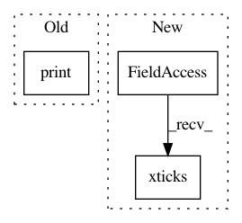

a90db800a369032192560bd0fddde5b007340473,research/differential_privacy/pate/ICLR2018/rdp_flow.py,,plot_rdp_total,#Any#Any#,116
Before Change
ax.tick_params(labelsize=14)
fout_name = os.path.join(FLAGS.figures_dir, "rdp_flow2.pdf")
print("Saving the graph to " + fout_name)
fig.savefig(fout_name, bbox_inches="tight")
plt.legend(loc=0, fontsize=13)
plt.show()
After Change
plt.xlim(xmin=1, xmax=100)
plt.ylim(ymin=0)
plt.xticks([1, 20, 40, 60, 80, 100])
plt.yticks([0, .0005, .001, .0015, .002])
plt.xlabel(r"Order $\alpha$", fontsize=16)
plt.ylabel(r"RDP value $\varepsilon$ at $\alpha$", fontsize=16)
In pattern: SUPERPATTERN
Frequency: 3
Non-data size: 3
Instances
Project Name: tensorflow/models
Commit Name: a90db800a369032192560bd0fddde5b007340473
Time: 2018-05-07
Author: mironov@gmail.com
File Name: research/differential_privacy/pate/ICLR2018/rdp_flow.py
Class Name:
Method Name: plot_rdp_total
Project Name: tensorflow/models
Commit Name: a90db800a369032192560bd0fddde5b007340473
Time: 2018-05-07
Author: mironov@gmail.com
File Name: research/differential_privacy/pate/ICLR2018/rdp_flow.py
Class Name:
Method Name: plot_rdp_curve_per_example
Project Name: PIQuIL/QuCumber
Commit Name: f0a81e2d218aa41b538de5e5cfebcc149f758dc5
Time: 2018-07-20
Author: gtorlai@uwaterloo.ca
File Name: examples/rbm_tutorial.py
Class Name: BinomialRBM
Method Name: fit